Префектура Хоккайдо · Эсаси и Отару · праздник и сельдь
Праздник Убагами в Эсаси и сельдь, сделавшая Хоккайдо богатым: от повозок «яма» до рыбацкой столовой Отару
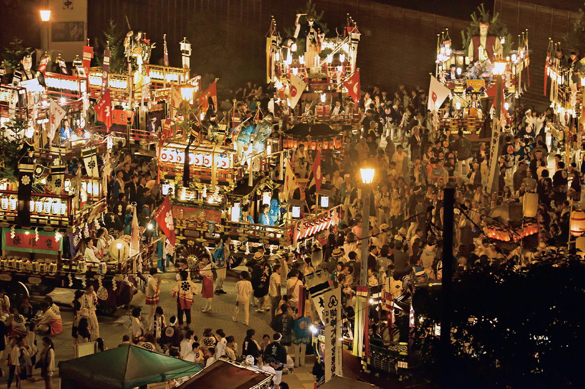
Каждое лето маленький портовый городок Эсаси на юго-западе Хоккайдо на три дня отдаётся празднику, который ведёт родословную от киотского праздника Гион. Тринадцать нарядных повозок с куклами полководцев и героев напоминают о временах, когда сельдь приносила побережью сказочные деньги. Следы той эпохи и сегодня можно найти не только в Эсаси, но и в Отару.
Праздник
Три дня, которые помнят сельдяной бум
Убагами-дайдзингу тогёсай, главный ежегодный праздник святилища Убагами-дайдзингу, считается одним из самых ярких летних праздников Хоккайдо. По преданию, святилище было главным во всём краю Мацумаэ, а на нынешнее место его перенесли в 1644 году. С тех пор праздник каждый год украшает короткое лето Эсаси.
Эсаси когда-то жил ловлей сельди и был портом для «китамаэбунэ», торговых кораблей, которые ходили вдоль Японского моря между Хоккайдо и западной Японией. Вместе с грузами сюда приходили обычаи и вкусы других краёв. Считается, что праздник продолжает традицию киотского праздника Гион именно потому, что культуру Киото привезли сюда эти корабли.
Главные участники праздника: 13 повозок и три паланкина «микоси» с божеством. Кульминаций две. Первая называется «ядоирэ-но-ги»: паланкины, обойдя город, бегом взлетают по лестнице к молельному залу святилища. Вторая наступает в последнюю ночь, когда все 13 повозок собираются вместе и музыканты на них устраивают состязание праздничной музыки.
Яма
Повозки с куклами героев
Праздничные повозки в Эсаси называют «яма», то есть «горы». На каждой ставят ствол пихты тодомацу: в нём, по поверью, поселяется божество. Наверху стоят куклы исторических и легендарных героев. Среди них полководец Сингэн Такэда (1521–1573), правитель провинции Каи, легендарный первый император Японии Дзимму, Мито Комон, то есть князь Мицукуни Токугава (1628–1701), ставший героем народных сказаний, мифический воин Ямато Такэру и Масамунэ Датэ (1567–1636), одноглазый князь и основатель Сэндая. У каждой повозки свой характер, и разглядывать их по очереди отдельное удовольствие.
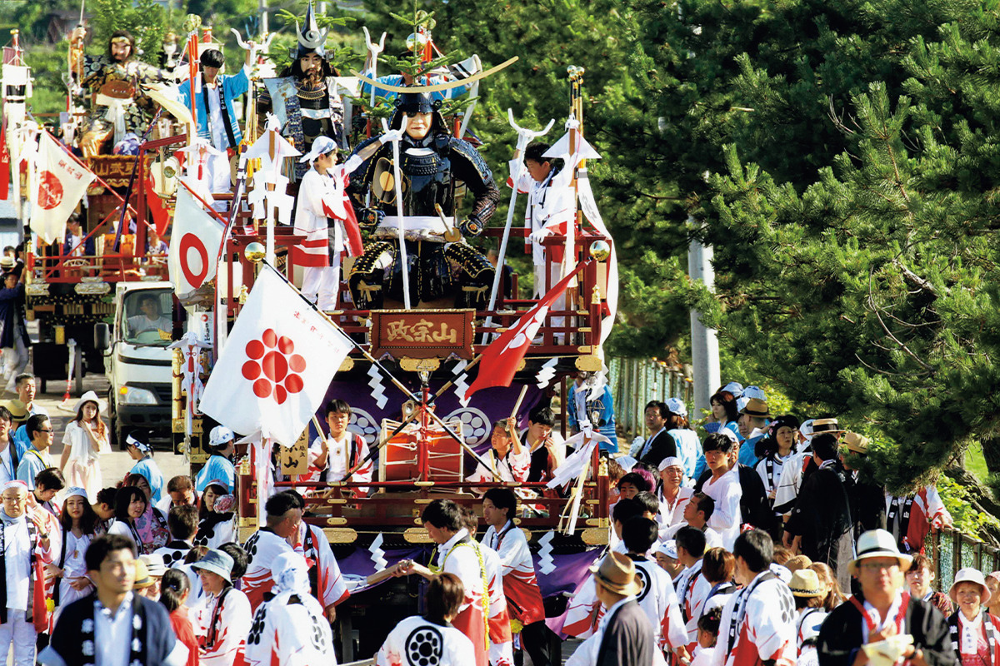
Повозки сопровождают три паланкина. Самый старый из них сделан в 1694 году, и уже по нему видно, насколько давно в Эсаси отмечают этот праздник. В 2026 году праздник прошёл 9–11 августа: в первый день божество переносили в паланкин, во второй повозки обходили нижнюю часть города, в третий верхнюю.
Святилище
Старейшее святилище Хоккайдо
Святилище Убагами-дайдзингу, где начинается и заканчивается праздник, считается старейшим на Хоккайдо святилищем, которому император пожаловал почётное звание «дзингу». Год основания неизвестен, но по преданию святилища его основали в эпоху Камакура, в XII–XIV веках. Оно стоит на невысоком холме над портом Эсаси, и местные жители веками берегли его как покровителя сельдяного промысла.
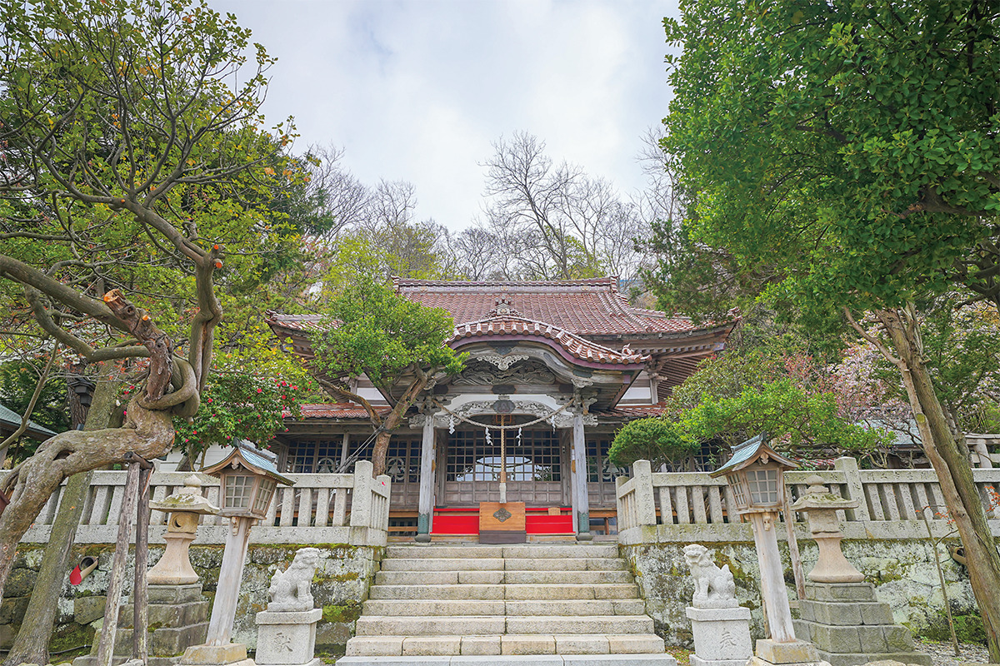
На территории святилища почитают и Орииубу, старуху из местного предания, которую считают прародительницей сельдяного промысла.
Убагами-дайдзингу тогёсай
- Адрес
- префектура Хоккайдо, уезд Хияма, Эсаси, Убагами-тё, 99-1, святилище Убагами-дайдзингу и улицы города
- Даты
- 9–11 августа (в 2026 году)
- Как добраться
- от автовокзала у станции Хакодатэ на автобусе до терминала Эсаси, выйти на остановке «Убагами-тё ферри-маэ», дальше пешком около 3 минут; на машине от станции Хакодатэ около 1 часа 30 минут
История
Рыба, которая звала весну
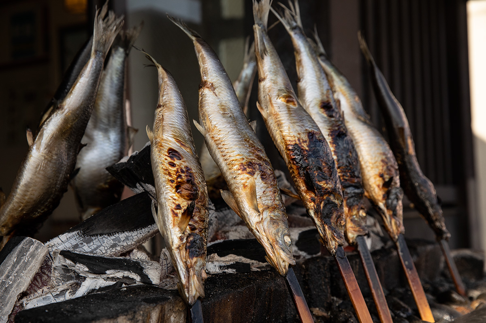
Сельдь, «нисин», на Хоккайдо называют рыбой, которая возвещает весну. Её косяки подходили к берегам ранней весной, и с эпохи Эдо это было главное событие весны на побережье Японского моря. Тогда же на Хоккайдо начался настоящий промысел, а в 1897 году улов достиг рекорда за всю историю. С конца XIX века и до 1920-х годов сельдяной промысел переживал золотой век.
На пике о промысле говорили: «Один подъём сети стоит тысячи рё». В пересчёте на нынешние деньги промысел за три весенних месяца приносил около 100 млн иен прибыли. Улов везли на кораблях «китамаэбунэ» в Киото и Осаку. На эти деньги на побережье строили «нисин-готэн», сельдяные дворцы, а сам промысел подарил Хоккайдо песню рыбаков «Соран-буси» и огромные рыбацкие дома «банъя», где жили до сотни работников.
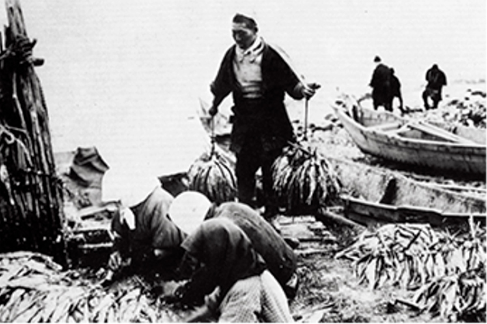
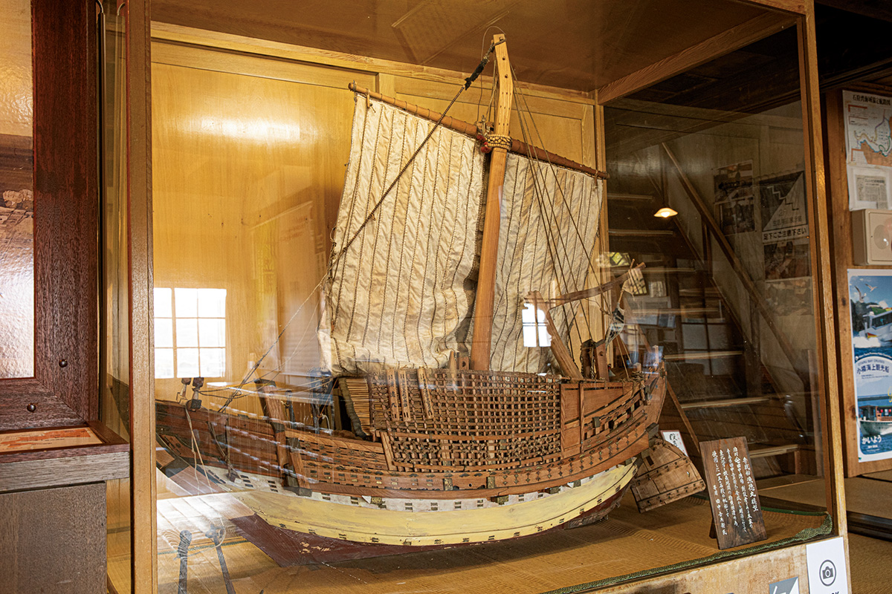
Потом улов начал падать. В 1954 году у берега между Ёити и Отару в последний раз увидели «куки», нерест сельди у самого берега, а в 1957 году промысел прекратился совсем. Сельдь считали исчезнувшей. В 1996 году власти Хоккайдо начали программу по восстановлению сельди Японского моря, и 18 марта 1999 года «куки» впервые за 45 лет увидели у побережья Румои. С 2009 года нерест каждый год, с середины до конца февраля, наблюдают в нескольких местах залива Исикари.
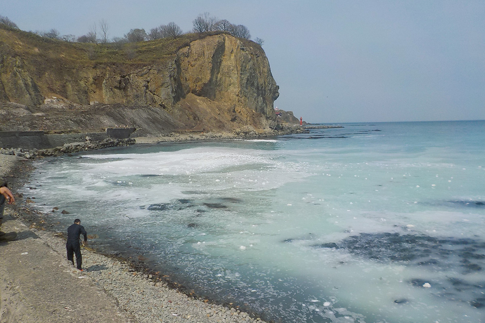
Следы сельдяной эпохи хорошо видны в портовом Отару. Здесь можно зайти в сельдяной дворец, переночевать в другом таком же и попробовать сельдь так, как её едят местные.
Соба
«Ябухан»: лапша в доме сельдяного владельца
Лапшичная «Ябухан» открылась в 1954 году и известна в Отару как соба-я, где можно хорошо посидеть с сакэ. Её здание составлено из загородного дома и каменного склада семьи, разбогатевшей на сельди, и части дома купца, сделавшего состояние на торговле «китамаэбунэ». За едой здесь чувствуешь историю Отару, когда-то делового центра Хоккайдо.
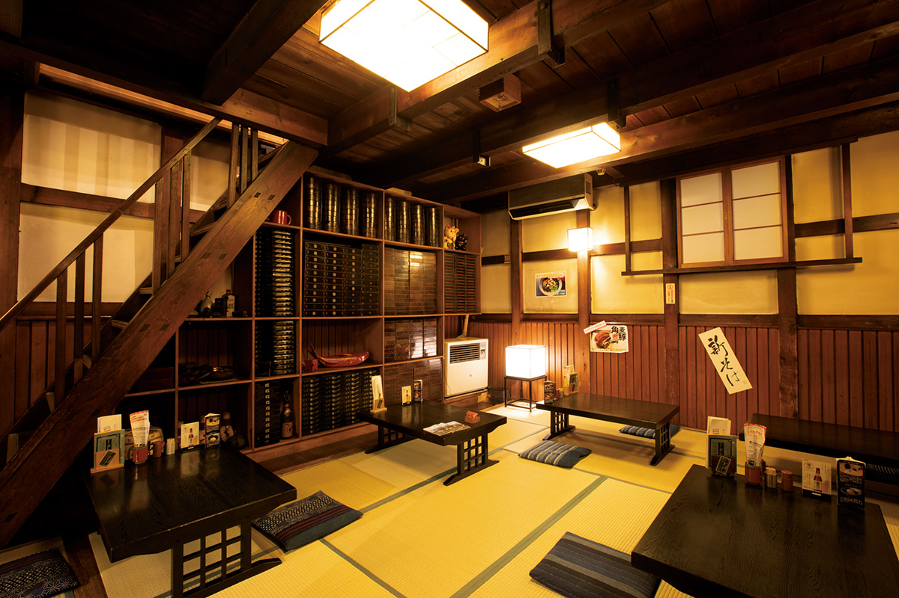
В феврале и марте, а также в июне на время праздника сельди в квартале Сюкуцу, здесь подают «нисин куки соба». На горячую лапшу кладут сельдь, томлённую в сладком соусе, а сверху тёртый ямс, вакамэ, нори и икру сельди «кадзуноко»: всё вместе изображает море во время нереста. Сельдь распадается от одного прикосновения, а икра хрустит.
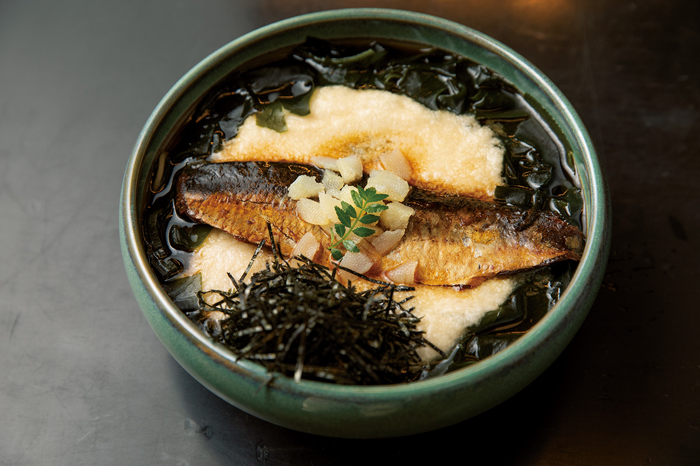
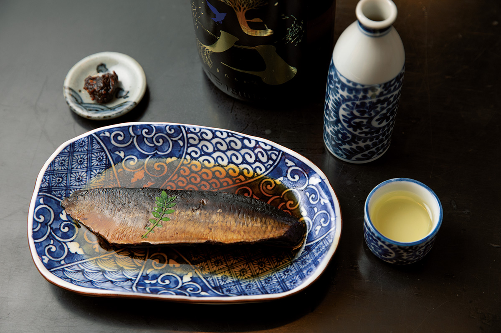
«Весной большие косяки сельди приходят к берегу на нерест, это и называется „куки“. Лет десять назад отец радовался: „Впервые за пятьдесят лет куки вернулись в море Отару!“»
молодая хозяйка «Ябухан»
«Ябухан»
- Адрес
- префектура Хоккайдо, Отару, Инахо, 2-19-4
- Телефон
- +81 134-33-1212
- Часы работы
- 11:00–15:00, 17:00–20:00
- Выходные
- вторник, одна среда в месяц
Столовая
«Аоцука сёкудо»: сельдь на углях у самого моря
Рыбацкая столовая «Аоцука сёкудо» стоит у моря в квартале Сюкуцу, и рыбу с ракушками здесь жарят на углях прямо у входа. Дед нынешнего главы переехал в Отару из Акиты в начале XX века, работал старшим на лодке у одного из трёх крупнейших владельцев сетей в Сюкуцу, а потом завёл своё дело. Отец тоже был рыбаком.
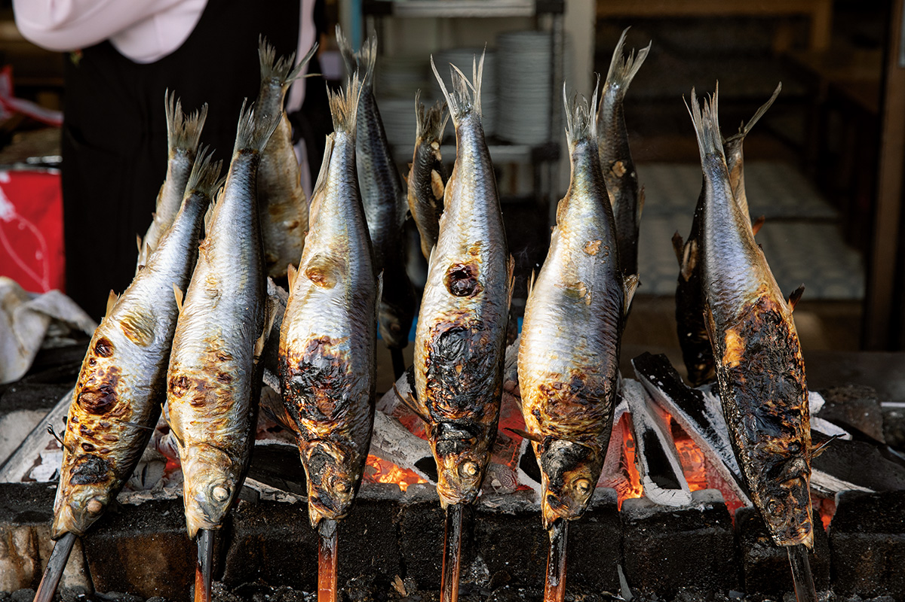
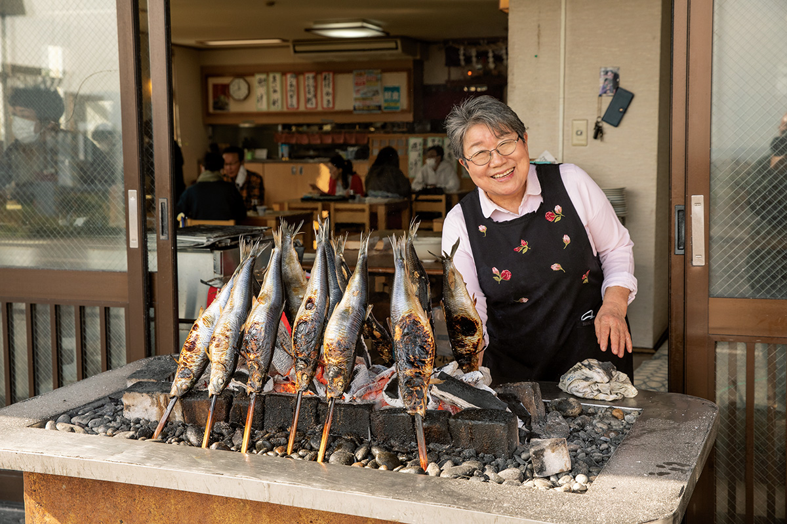
По словам главы столовой, в начале 1980-х годов власти Хоккайдо начали выпускать в море мальков сельди. Рыбаки сами оплачивали выпуск через свой кооператив и следили за уловом, и так годами берегли сельдь.
«В четвёртом классе к берегу подошёл огромный косяк, и школу закрыли: дети помогали ловить сельдь. В Отару ловят и раков-богомолов, и гребешков, и морских ежей, и кальмаров. Но сельдь всё равно особенная рыба»
глава «Аоцука сёкудо»
Кроме сельди на углях здесь готовят комплексные обеды с морепродуктами, сашими по сезону, рамэн и рис с рыбой. Жареное на углях можно взять и к обеду, и отдельно, и как закуску к сакэ. «Аоцука сёкудо» ещё и рыбацкая гостиница, но поесть можно и без ночёвки.
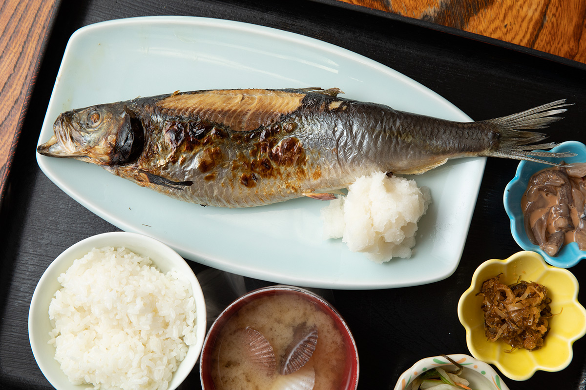
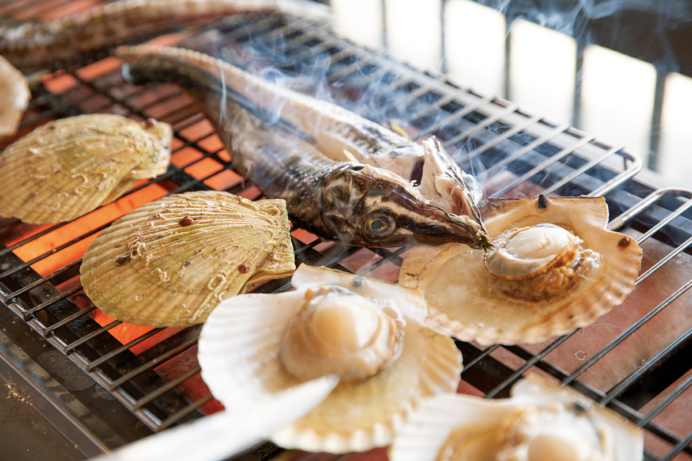
«Аоцука сёкудо»
- Адрес
- префектура Хоккайдо, Отару, Сюкуцу, 3-210
- Телефон
- +81 134-22-8034
- Часы работы
- 10:00–20:00
- Выходные
- без выходных
Дворец
«Нисин-готэн» в Отару
Рядом, в том же квартале Сюкуцу, стоит сельдяной дворец, который принадлежит городу. Его построил владелец сетей в деревне Томари на полуострове Сякотан, а потом дом перенесли в Отару и восстановили. Здание сохранило облик конца XIX века и показывает, как роскошно жили в годы сельдяного бума. Дом включён в список материального культурного наследия Хоккайдо.
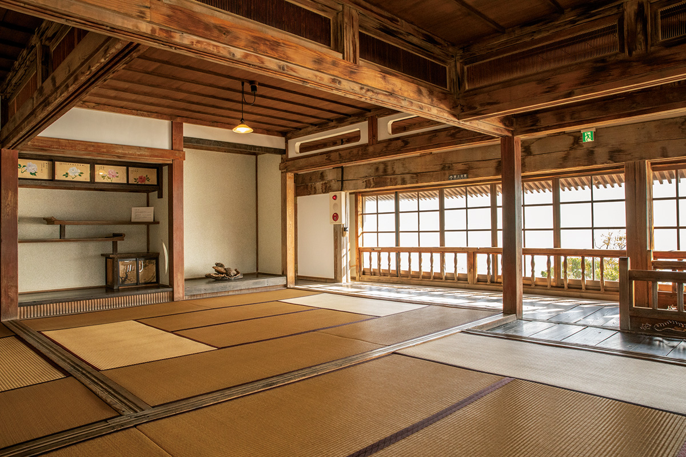
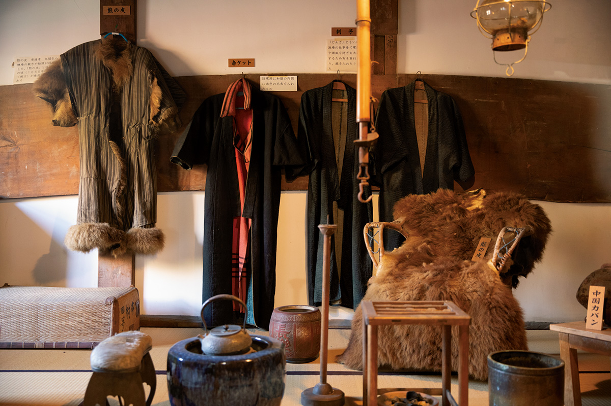
«Нисин-готэн», сельдяной дворец Отару
- Адрес
- префектура Хоккайдо, Отару, Сюкуцу, 3-228
- Телефон
- +81 134-22-1038
- Часы работы
- 9:00–17:00
- Выходные
- без выходных, с декабря по март закрыто
Ночлег
Ginrinsou: ночь в сельдяном дворце
В Ginrinsou можно переночевать в настоящем сельдяном дворце. Дом владельца, который разбогател на сельди в соседнем с Отару городе Ёити, перенесли на высокий берег над заливом Исикари. Здание внесено в список исторических построек Отару, и это гостиница с горячими источниками.
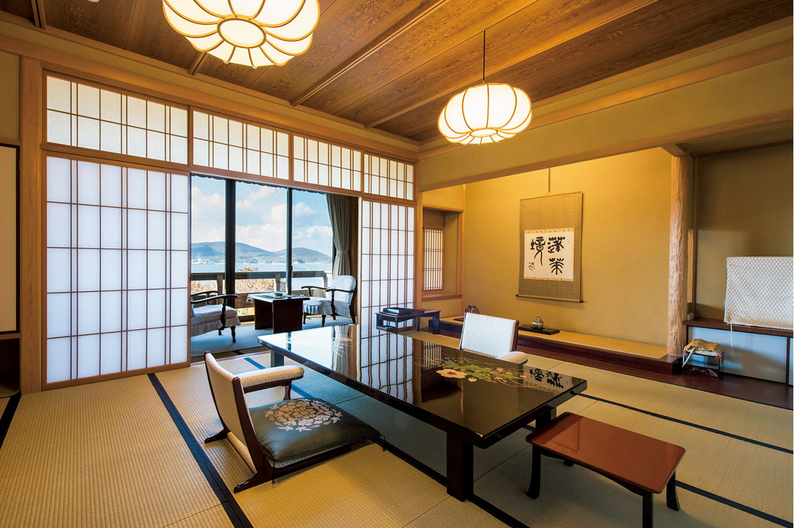
Ginrinsou
- Адрес
- префектура Хоккайдо, Отару, Сакура, 1-1
- Телефон
- +81 134-54-7010
- Цены / Вход
- ночь с ужином и завтраком от 16 650 до 33 150 иен с налогом и сервисным сбором (2022 год)
- Сайт
- ginrinsou.com
Рынок
«Ринъю асаити»: утренний рынок для своих
На утренний рынок «Ринъю асаити» ходят сами жители Отару, и открывается он рано утром. На прилавках свежая рыба и морепродукты из ближних вод.
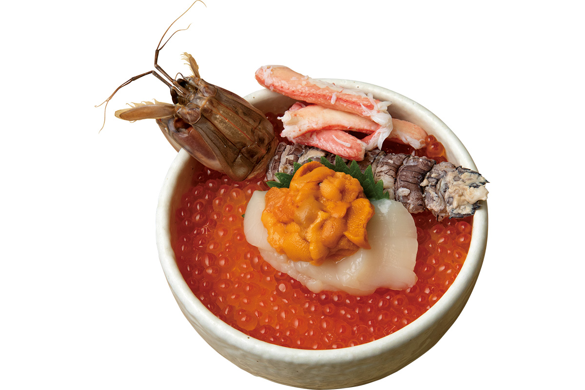
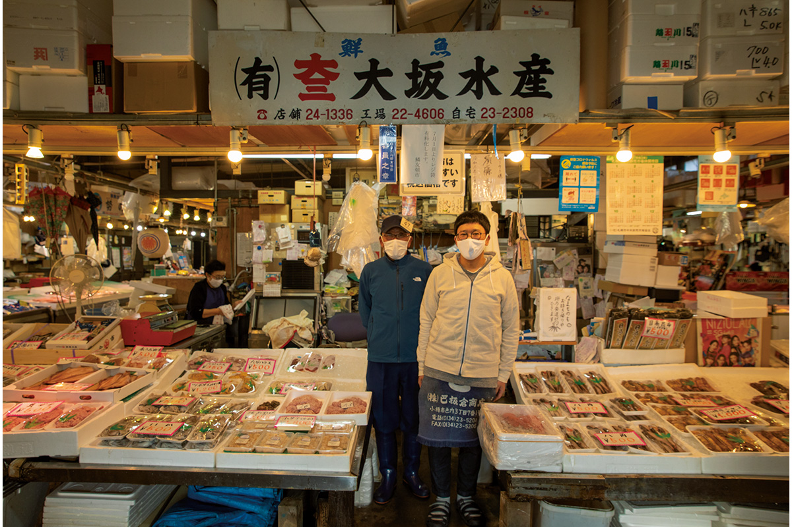
«Ринъю асаити»
- Адрес
- префектура Хоккайдо, Отару, Иронай, 3-10-15
- Телефон
- +81 134-22-0257, «Асаити сёкудо» +81 134-24-0668
- Часы работы
- 4:00–14:00, «Асаити сёкудо» 4:00–14:00, с ноября по апрель с 5:00
- Выходные
- воскресенье, 1–10 января
Фото: Ёсихито Одзава, Городской музей Отару.